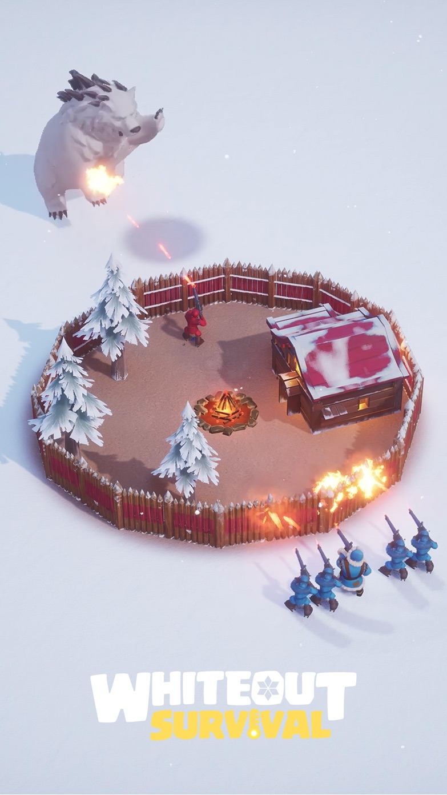

火炉把抽象成长变得可见
冰雪环境持续制造生存压力，火炉等级则直观代表安全和文明进度。核心建筑因此不只是数值节点，也是情绪锚点。

冰雪环境持续制造生存压力，火炉等级则直观代表安全和文明进度。核心建筑因此不只是数值节点，也是情绪锚点。
建造、训练和研究把目标切成不同长度。玩家离开前已经知道什么时候值得回来，日常节奏因此被系统预先安排。
建筑、英雄、装备和科技持续争夺资源。总有一条线接近下一次提升，也总有另一条线提醒资源还不够。
帮助、集结和活动让战力不再只是个人成绩。上线时间、分工和共同目标逐渐建立责任感，也形成更难被替代的留存理由。
Retention Layers
不同时间尺度的目标层层接住玩家。
资源到账、建筑变化和战力增长形成短周期满足。
离线等待不是空白，而是已经预约好的下一步。
固定目标让成长方向保持清楚，也推动资源持续循环。
共同目标、排名和服务器格局把个人进度放进更大的社会结构。
Design Takeaway
先让每次上线有事做，再让这些事和别人产生关系。
每次打开游戏都能完成一件事，玩家才会相信进度一直在向前走。
队列开始时就明确结束时间与收益，等待才是计划，不是卡住玩家。
联盟活动应让不同强度的成员都有位置，避免社交只剩高战力玩家的舞台。
当升级只剩数字变化，冰雪生存的独特感会迅速变薄。视觉、事件与玩法要持续提醒玩家为何建设这座营地。